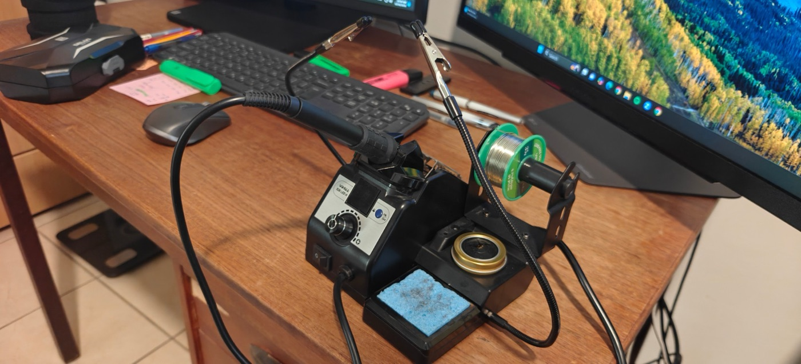
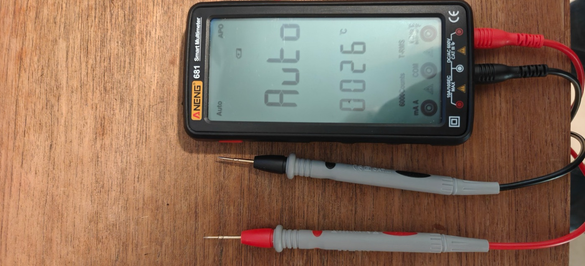


Arming, disarming and notifications from the phone for an old AV-GAD EasyLoader AV-2008 alarm panel, using a Shelly Plus Uni Wi-Fi module.
Works in the browser only, with no AI service. Press / to search.
More than once the alarm was armed and went off, the system called me, and I had no way to disarm it from where I was. This panel model (AV-2008, not the AV-2008D) cannot be disarmed during that phone call. Now it disarms from the app, from anywhere.
The final push came from a message in the WhatsApp group of the neighbourhood where I live, after alarms went off on a Saturday morning (translated from Hebrew; the street name is removed):
A neighbour, in the neighbourhood WhatsApp group
Good morning, what's going on with the alarms first thing on Saturday morning on […] Street???
Whoever runs a home alarm, please make sure you can monitor it and stop it remotely when you're not home. Isn't that the whole idea?
The panel now arms and disarms from the Shelly app, and the phone gets a notification when the alarm goes off. The module connects to three existing points on the panel (wiring plan): the key-switch input, the "armed" output and the "alarm" output. The panel itself was not modified. What it can't do is listed in section 9. Please read the disclaimer before using any of it.
| Stage | Time |
|---|---|
| Investigating with Claude how to disarm remotely with the existing panel, before the Shelly idea | About 5 hours |
| Planning the Shelly build with Claude, before buying anything | About 5 hours |
| Waiting for the parts from AliExpress | About 1 week |
| Building the solution, from start to finish | About 5 hours |
The panel is an AV-GAD EasyLoader AV-2008 from 2005, with no Wi-Fi and no app. A Shelly Plus Uni connects to points the panel already has (where they are: section 5):
| What | How |
|---|---|
| Arm / disarm | Shelly output 1 gives a 1-second pulse between KEY and -V, like an external key switch. Each pulse toggles the state. |
| "Armed" state | Input 1 reads the panel's ON output, which switches to minus while the panel is armed. |
| "Alarm!" | Input 2 reads the A1 output, which switches to minus during an alarm. |
| Power | The Shelly runs from the panel's 12V, including from its battery during a power cut. |
Why the Plus Uni: it has 2 isolated outputs, 2 inputs and Wi-Fi, and runs on 12V with no extra supply. Because KEY toggles, you cannot tell what a tap did without the status input.
Everything was ordered online. The joints were soldered and insulated with heat-shrink sleeves.
| Part | Qty | Role | Price (AliExpress) |
|---|---|---|---|
| Shelly Plus Uni | 1 | The module: 2 isolated outputs, 2 inputs, Wi-Fi | About ₪66 |
| Junction box, clear lid with mounting ears (100×68×50 mm) | 1 | Holds the Shelly outside the steel cabinet, so Wi-Fi works | About ₪3–8 |
| 6-core cable UL2464, 22 AWG | 5 m (about 1.5 m used) | From the box to the panel terminals | About US$9.44 + US$4.86 shipping |
| Heat-shrink sleeve kit | 1 | Insulating the joints and the ends of unused wires | Bought later; not in the order list |
| Total | About ₪125 |
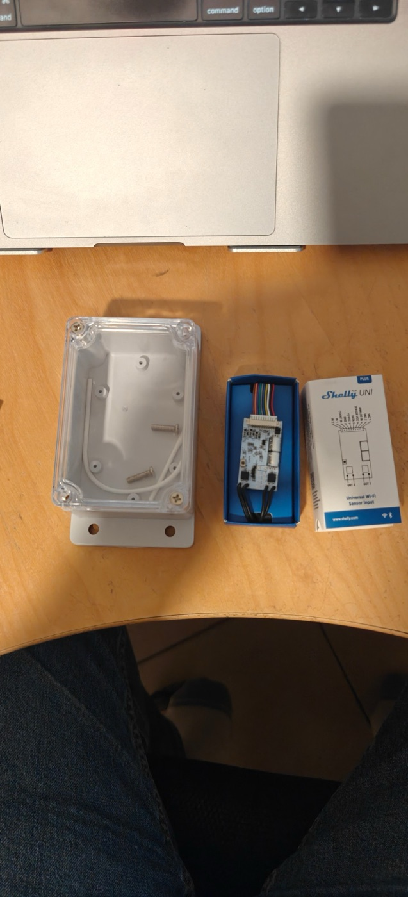
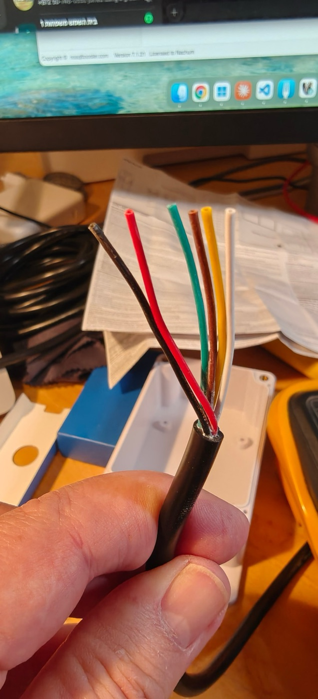
| Tool | Used for |
|---|---|
| Soldering station (YIHUA 926 LED IV) with two helping-hand clips, lead-free solder and a tip cleaner | Soldering the cable to the Shelly leads |
| A heat source for the heat-shrink (heat gun, lighter or the side of the iron) | Shrinking the sleeves over the joints |
| Multimeter (ANENG 681) | Voltage between screws 2 and 3, continuity for the OUT1 check, diode mode for green against black |
| Precision screwdriver set (DELIXI) | The panel's terminal screws and the box lid |
| Wire stripper (DuraTech) and electrician's scissors with stripping notches | Stripping the cores and cutting wires |
| Utility knife (Stanley) | Cutting the cable's outer sheath |
| Drill | The cable hole in the box and the wall screws |
| Flashlight and cable ties | Reading the labels on the board; strain relief in the box |


5 cores connect 8 Shelly wires to 5 panel terminals; the sixth core is a spare. The colours were chosen so a likely mistake does no harm: the green core is the spare, because the Shelly's green wire goes to -V.
| Cable core | Shelly wires | Panel terminal |
|---|---|---|
| Red | Red (VAC1) + white (ANALOG IN) | +12V, screw 2 |
| Black | Black (VAC2) + green (GND) + one OUT1 wire | -V, screw 3 |
| White | The other OUT1 wire | KEY, top screw of the left block |
| Yellow | Orange (IN1) | ON, screw 16 |
| Brown | Brown (IN2) | A1, screw 15 |
| Green | Not connected | Not connected |
Unused Shelly wires are each insulated on their own: yellow, blue, grey (+5V), purple, and both OUT2 wires. The antenna (a thin black wire with a sleeve on its tip) is left untouched. It doesn't matter which OUT1 wire goes where: OUT1 is an isolated switch that works both ways.
The cable was soldered to the Shelly leads at a desk, and the finished unit was installed afterwards.
-V joint, with 4 wires, needs a wider sleeve.A note on the photos: these joints are far from a professional finish, but they hold, they are fully insulated, and everything works.
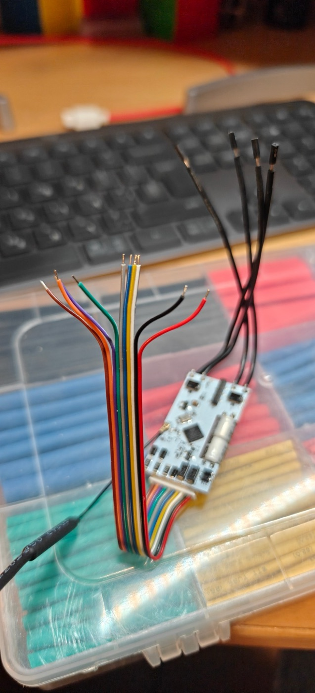
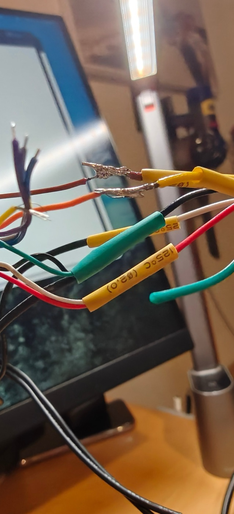
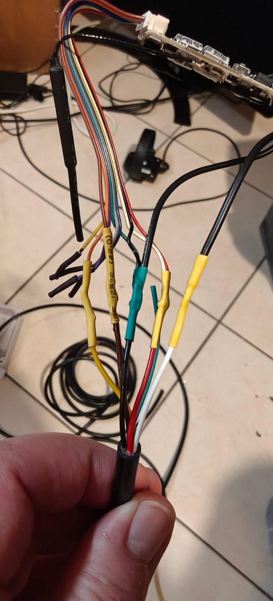
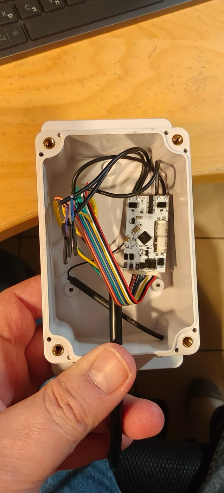
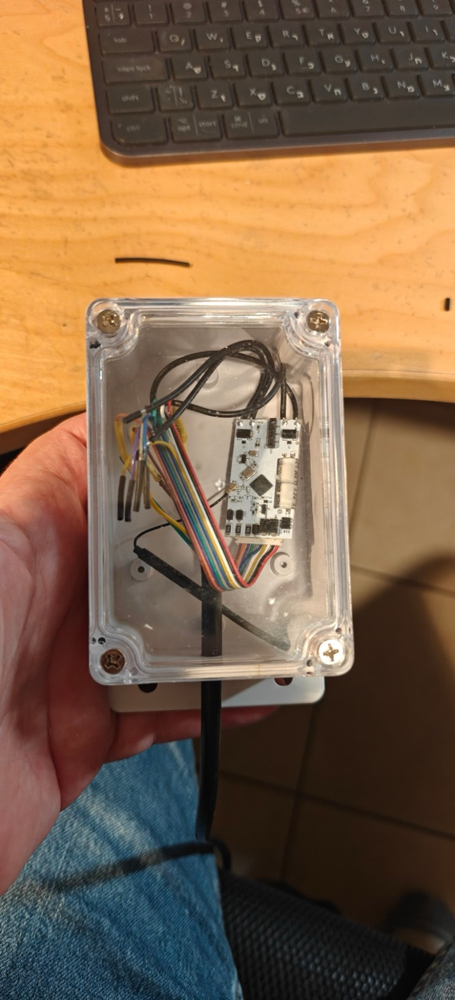
Screw 1 on the bottom strip is Earth (⏚), not +12V. The first guide assumed the strip started with +12V, and the meter showed no voltage between screws 1 and 2.
How it was found:
| Screw | 1 | 2 | 3 | 4–11 | 12 | 13 | 14 | 15 | 16 | 17 |
|---|---|---|---|---|---|---|---|---|---|---|
| Terminal | ⏚ Earth | +12V | -V | zones 1–8 | -V | YE | OR | A1 | ON | SLO |
KEY is the top screw of the vertical block on the left (marked KEY STR on the board).
KEY is the top screw (white core). Never connect anything to AC 16V.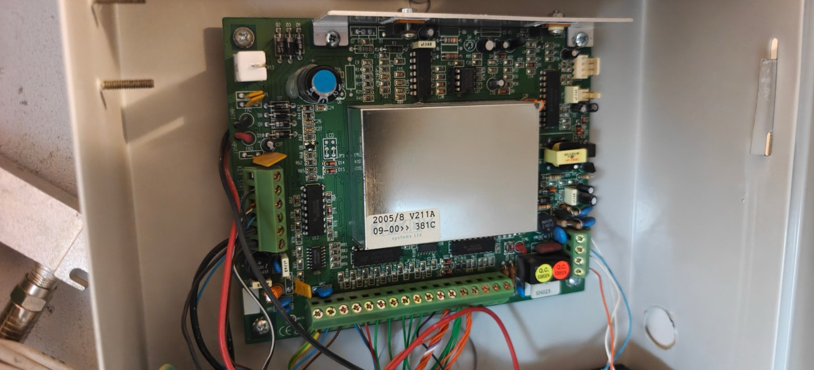
The connections were made with the 220V on and the battery disconnected, in two stages. The alarm's own breaker could not be found, and at 12V it is enough to work carefully with an insulated screwdriver, away from the transformer's 220V block.
KEY, ON and A1 were still disconnected.KEY, yellow to screw 16 (ON), brown to screw 15 (A1).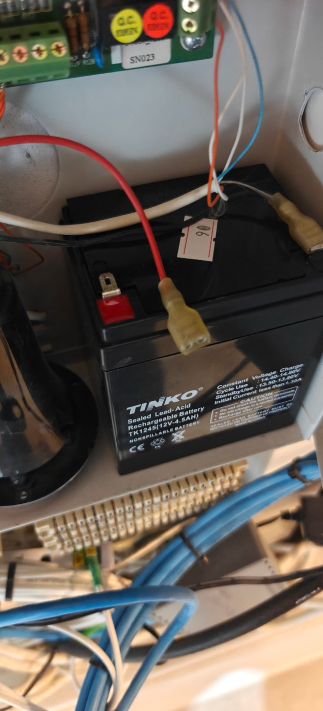
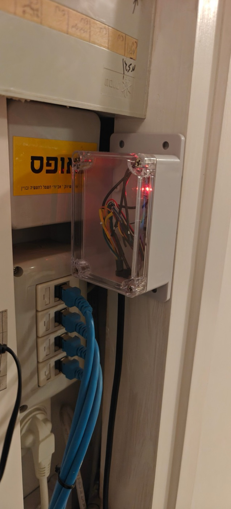
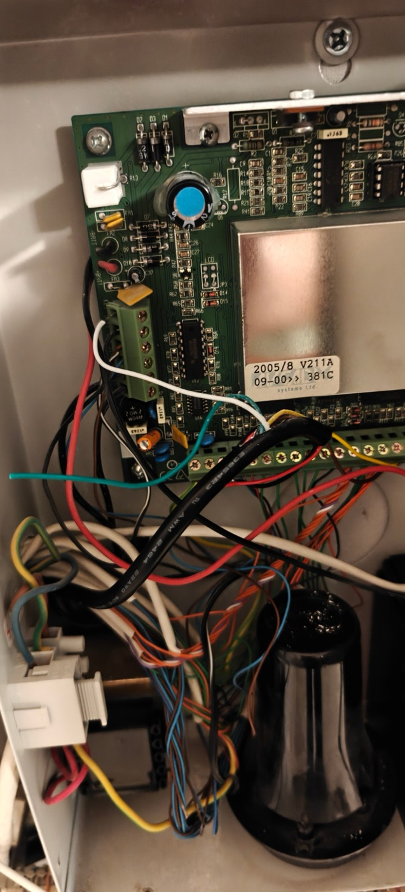
The settings only stuck once they were set directly from a computer on the same network. The first Save in the app didn't take, and both channels stayed in Toggle mode. The Shelly was added in the Shelly Smart Control app over Bluetooth, on the 2.4GHz Wi-Fi.
| Setting | Before | After |
|---|---|---|
| Channel 1, input mode | follow (Toggle) | detached |
| Channel 1, power-on state | match the switch | off |
| Channel 1, Auto OFF | off | 1 second |
| Channel 2, input mode + power-on | follow + match the switch | detached + off |
| Inputs 1 and 2 | Switch, no name | Switch, Armed / Alarm |
In Toggle mode, the ON input would switch OUT1, and the panel would arm and disarm by itself.
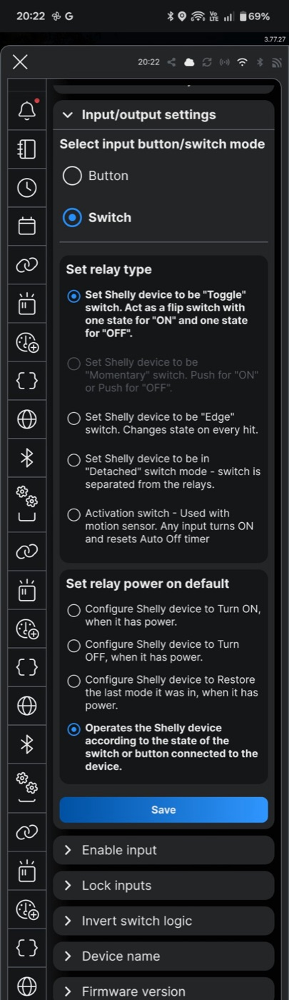
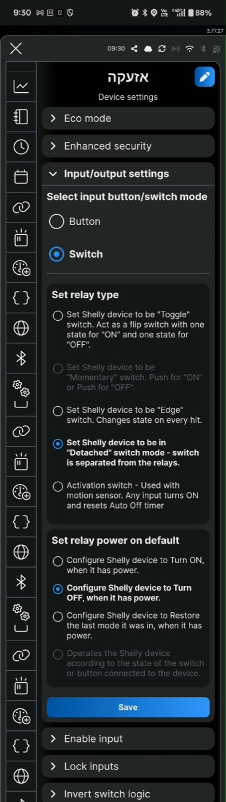
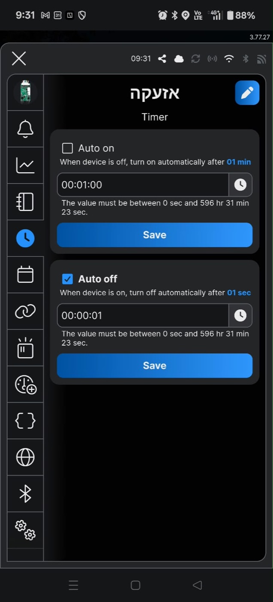
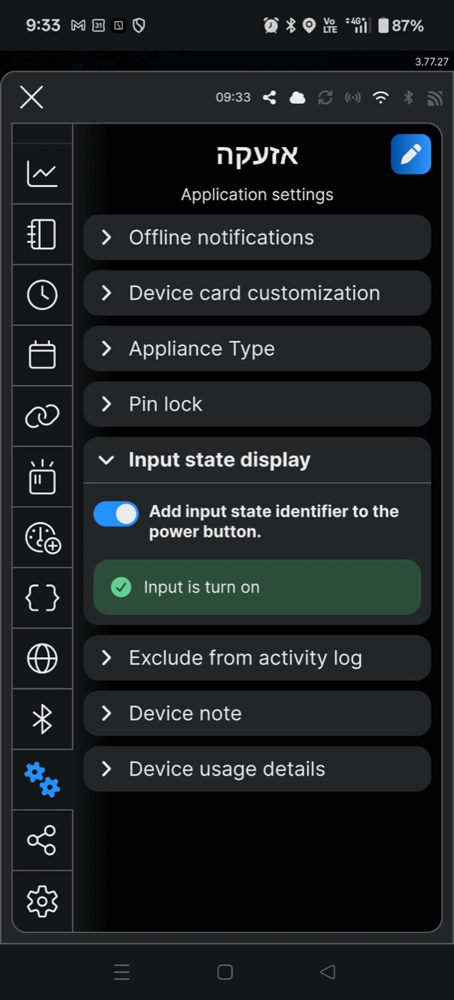
Notifications don't come by themselves. Each one is a Scene in the app, which runs in the Shelly cloud. The app shows the Shelly as two cards: the first is channel 1, the arm/disarm button; the second, marked "(2)", is channel 2, whose output is not connected.
| Scene | When | Do | Status |
|---|---|---|---|
| Alarm | Input State 2, Turn on, Trigger | Notify action: "Alarm triggered!" | Working |
| Armed | Input State 1, Turn on, Trigger | Notify action: "Alarm armed" | Not set up yet |
| Disarmed | Input State 1, Turn off, Trigger | Notify action: "Alarm disarmed" | Not set up yet |
Tested: the Armed input switches on about a second after the arming tap and off after the disarming tap. On the first arming, the Alarm input also read on for about 2 seconds, so watch for a false "alarm" notification when arming.
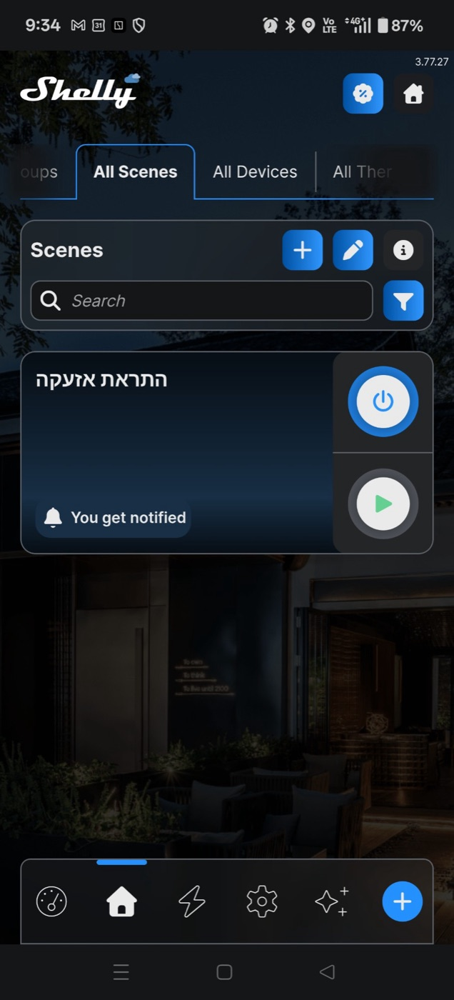
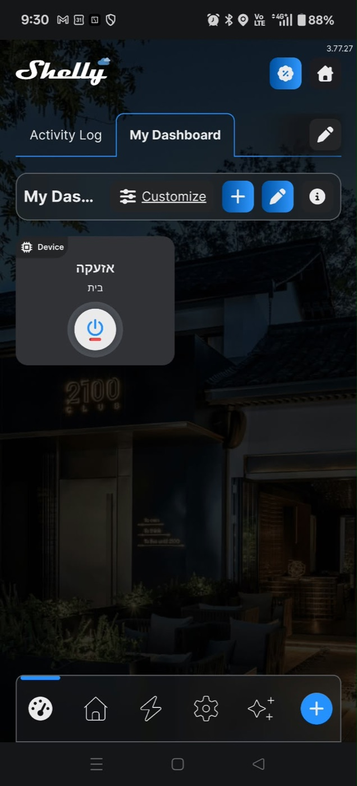
The Shelly acts like one key switch and two status lights. Everything else stays on the keypad, which talks to the panel over a closed data bus (YE / OR).
For full control from the phone you need a newer panel with its own app, for example RISCO LightSYS+ or PIMA Force.
| Problem | Cause | Fix |
|---|---|---|
| The original plan connected everything before setting up the app | A new Shelly has no Auto OFF, and its inputs are linked to the outputs | Two-stage wiring: power and setup first, then KEY and the inputs |
| Green-to-black test read 500 Ω instead of 0 | A rectifier diode in the power input | Test in diode mode instead |
| An extra thin black wire on the Shelly | It is the Wi-Fi antenna | Left untouched, laid out in the box (wiring plan) |
| No 12V between screws 1 and 2 | Screw 1 is Earth | Checked against both manuals; A1 and ON moved to 15 and 16 |
| The alarm's breaker could not be found | The battery keeps the panel on, or the breaker is on another board | Connected at 12V with the battery disconnected |
| App settings did not save | Unknown | Set from a computer on the same network, and checked after a reboot |
The transformer in the alarm cabinet carries 220V AC. Don't open it or touch its terminal block. This page describes one specific installation; check your own panel's labels and manual before connecting anything.
This page describes what I did on my own alarm system. It is not professional advice or an installation guide. I take no responsibility for any damage, injury or loss, or for what others do with this information. Working on alarm and electrical systems is at your own risk; if in doubt, use a qualified installer.